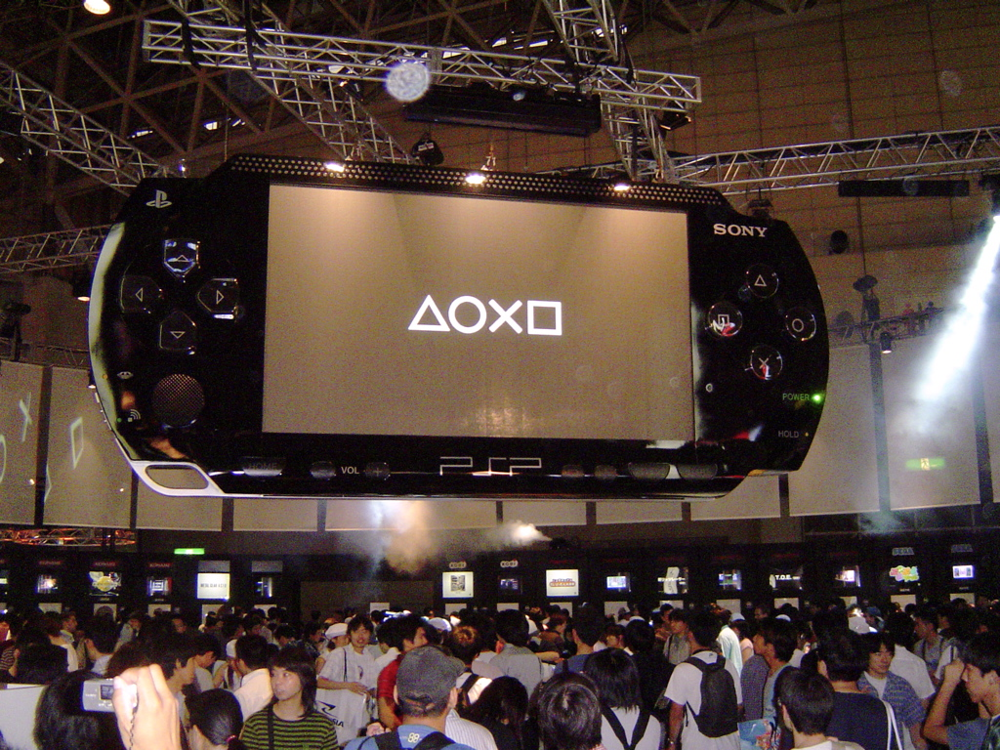
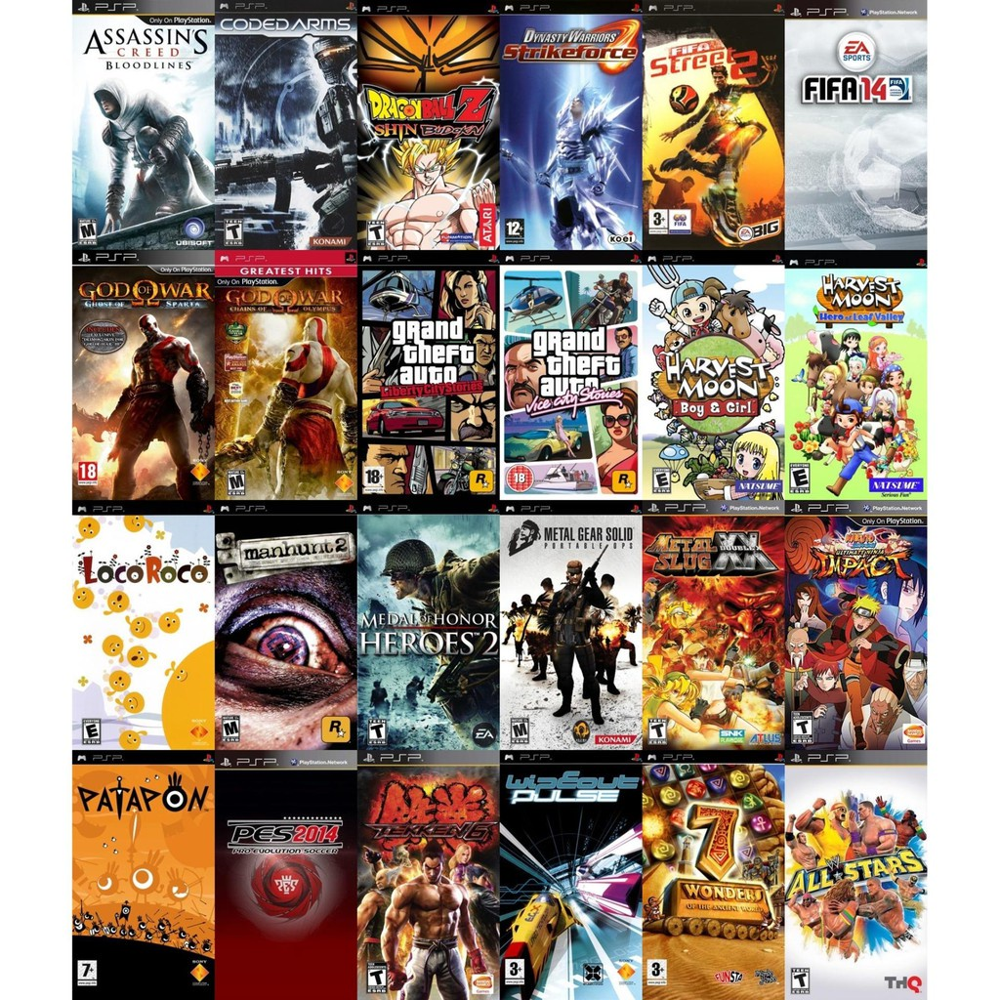

History
The PlayStation Portable (PSP) is a handheld game console developed and marketed by Sony Computer Entertainment. It was first released in Japan on December 12, 2004, in North America on March 24, 2005, and in PAL regions on September 1, 2005, and is the first handheld installment in the PlayStation line of consoles. As a seventh generation console, the PSP competed with the Nintendo DS.
Development of the PSP was announced during E3 2003, and the console was unveiled at a Sony press conference on May 11, 2004. The system was the most powerful portable console when it was introduced, and was the first real competitor of Nintendo's handheld consoles after many challengers such as Nokia's N-Gage had failed. The PSP's advanced graphics capabilities made it a popular mobile entertainment device, which could connect to the PlayStation 2 and PlayStation 3, any computer with a USB interface, other PSP systems, and the Internet. The PSP also had a vast array of multimedia features such as video playback, audio playback, and has been considered a portable media player as well. The PSP is the only handheld console to use an optical disc format—in this case, Universal Media Disc (UMD)—as its primary storage medium both games and movies have been released on the format.
The PSP was received positively by critics, and sold over 80 million units during its ten-year lifetime. Several models of the console were released, before the PSP line was succeeded by the PlayStation Vita, released in Japan in 2011 and worldwide a year later. The Vita has backward compatibility with PSP games that were released on the PlayStation Network through the PlayStation Store, which became the main method of purchasing PSP games after Sony shut down access to the store from the PSP on March 31, 2016. Hardware shipments of the PSP ended worldwide in 2014, production of UMDs ended when the last Japanese factory producing them closed in late 2016.
Game library
There were 1,370 games released for the PSP during its 10-year lifespan. Launch games for PSP included Ape Escape: On the Loose (North America, Europe, Japan), Darkstalkers Chronicle: The Chaos Tower (North America, Europe, Japan), Dynasty Warriors (all regions), Lumines (North America, Europe, Japan), Metal Gear Acid (North America, Europe, Japan), Need for Speed: Underground Rivals (North America, Europe, Japan), NFL Street 2: Unleashed (North America, Europe), Ridge Racer (North America, Europe, Japan), Spider-Man 2 (2004) (North America, Europe, Japan), Tiger Woods PGA Tour (North America, Europe, Japan), Tony Hawk's Underground 2 Remix (North America, Europe), Twisted Metal: Head-On (North America, Europe), Untold Legends: Brotherhood of the Blade (North America, Europe, Japan), Wipeout Pure (all regions), and World Tour Soccer: Challenge Edition (North America, Europe). Additionally, Gretzky NHL and NBA were North America exclusive launch titles. The best selling PSP game is Grand Theft Auto: Liberty City Stories, which sold 7.6 million copies as of October 2015.
Other top selling PSP games include Grand Theft Auto: Vice City Stories, Monster Hunter Portable 3rd, Gran Turismo, and Monster Hunter Freedom Unite. Retro City Rampage DX, which was released in July 2016, was the final PSP game that was released. The best rated PSP games on Metacritic are God of War: Ghost of Sparta, Grand Theft Auto: Vice City Stories, and Daxter. Metal Gear Solid: Peace Walker is the only PSP game to receive a perfect score from Famitsū. During E3 2006, Sony Computer Entertainment America announced that the Greatest Hits range of budget titles were to be extended to the PSP system. On July 25, 2006, Sony Computer Entertainment America released the first batch of Greatest Hits titles. These titles included Ape Escape:On the Loose, ATV Offroad Fury: Blazin' Trails, Hot Shots: Open Tee, Twisted Metal: Head-On and Wipeout Pure. The PSP Greatest Hits lineup consists of games that have sold 250,000 copies or more and have been released for nine months. PSP games in this lineup retail for $19.99 each. Downloadable games were limited to 1.8 GB, most likely to guarantee a potential UMD release. A section of the PlayStation Store was dedicated to "Minis", smaller, cheaper games available as download only. Trophy support was planned for the PSP but the idea was cancelled after the firmware was cracked.